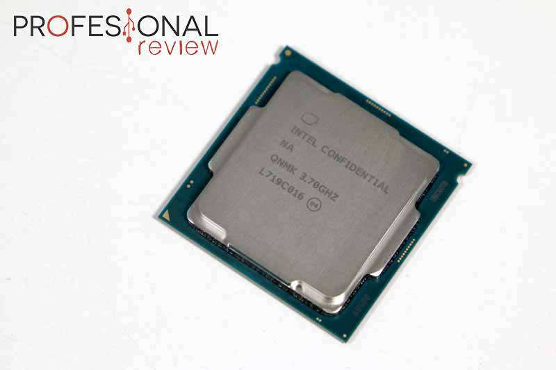
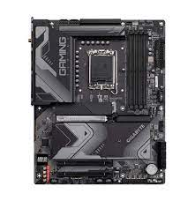
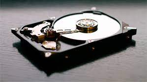
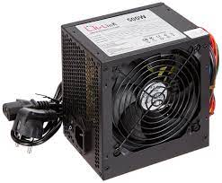
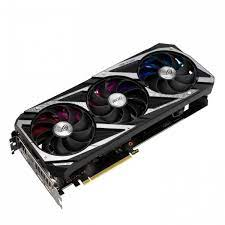

Hardware

¿Qué es el Hardware?
 Hardware es una palabra inglesa que hace referencia a las partes físicas tangibles de un sistema informático, es decir, todo aquello que podemos tocar con las manos. Dentro del hardware encontramos una gran variedad de componentes eléctricos, electrónicos, electromecánicos y mecánicos. El hardware es el chasis del ordenador, los cables, los ventiladores, los periféricos y todos los componentes que se pueden encontrar en un dispositivo electrónico. La Real Academia Española lo define como «Conjunto de los componentes que integran la parte material de una computadora».
Hardware es una palabra inglesa que hace referencia a las partes físicas tangibles de un sistema informático, es decir, todo aquello que podemos tocar con las manos. Dentro del hardware encontramos una gran variedad de componentes eléctricos, electrónicos, electromecánicos y mecánicos. El hardware es el chasis del ordenador, los cables, los ventiladores, los periféricos y todos los componentes que se pueden encontrar en un dispositivo electrónico. La Real Academia Española lo define como «Conjunto de los componentes que integran la parte material de una computadora».
El término no solamente se aplica a los ordenadores, ya que es a menudo utilizado en otras áreas de la vida diaria y la tecnología como robots, teléfonos móviles, cámaras fotográficas, reproductores digitales o cualquier otro dispositivo electrónico. El hardware representa un concepto contrario al Software, la parte intangible de un sistema informático, es decir todo aquello que no podemos tocar físicamente.
Una forma de clasificar el hardware es en dos categorías: el hardware principal, que abarca el conjunto de componentes indispensables necesarios para otorgar la funcionalidad mínima, y por otro lado, el hardware complementario, que es el utilizado para realizar funciones específicas más allá de las básicas, no estrictamente necesarias para el funcionamiento del sistema informático.
Tipos de hardware de un ordenador o PC
Procesador o CPU

La Unidad Central de Procesamiento, más conocida por sus siglas en inglés CPU, es el componente fundamental de un ordenador, pues se trata del encargado de interpretar y ejecutar instrucciones y procesar datos. En el caso de que la CPU sea manufacturada como un único circuito integrado se conoce como microprocesador, abreviado comúnmente como procesador. Los ordenadores más potentes, como los utilizados en la supercomputación, pueden tener multitud de microprocesadores funcionando de forma conjunta, el conjunto de todos ellos conforma la unidad central de procesamiento.
Placa base

La placa base es la columna vertebral del ordenador, esa en la que están algunos de los componentes o partes más importantes de tu equipo. A la hora de montarte tu propio PC, la placa base es probablemente uno de los elementos que más detenidamente tienes que elegir, ya que de ella van a depender muchas de las características que puede y podrá tener tu ordenador.
Disco duro

Los discos duros son dispositivos de almacenamiento de datos en los que podemos almacenar cualquier tipo de información digital. Ya sean fotografías, vídeos, archivos de texto o programas informáticos, el disco duro es una de las partes más importantes de cualquier sistema informático.
Fuente de alimentación

Una fuente de alimentación convierte la corriente alterna (AC) en una forma continua de energía que los componentes del ordenador necesitan para funcionar, llamada corriente continua (DC). A diferencia de algunos componentes de Hardware cuyo uso no es obligatorio, como podría ser un disco SSD, la fuente de alimentación es una pieza crucial porque, sin ella, el resto del hardware interno no puede funcionar.
Tarjeta gráfica

La tarjeta gráfica o tarjeta de vídeo de un componente que viene integrado en la placa base del PC o se instala a parte para ampliar sus capacidades. Concretamente, esta tarjeta está dedicada al procesamiento de datos relacionados con el vídeo y las imágenes que se están reproduciendo en el ordenador.